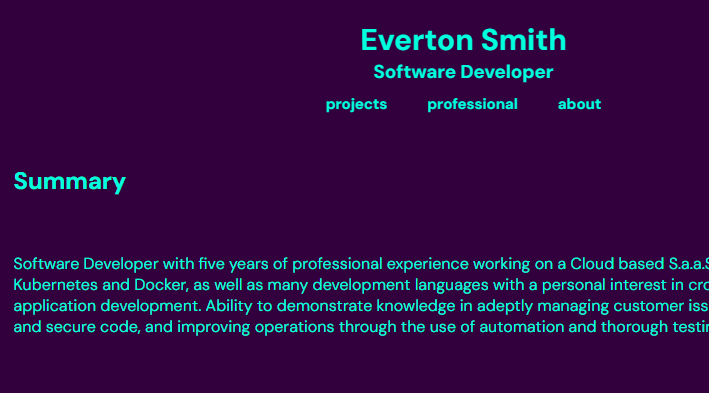

Cafe Website Sample

Example website for a simple cafe
Simple Business Website Sample

Example website for generic business
Bob's Burgers Index

Bob's Burgers API Javascript Example
Haley Jaques Poetry
Small project displaying the works of Haley Jaques
Profile Page (Early Dev.)

Alternative Personal Website Design
Javascript Memory Game

Small Javascript Memory Game
Personal Website
v6.0 Personal Website
Everton Smith
Summary
Software Developer with five years of professional experience working on a Cloud based S.a.a.S.. Familiar with Git, Kubernetes and Docker, as well as many development languages with a personal interest in cross platform web application development. Ability to demonstrate knowledge in adeptly managing customer issues, implementing efficient and secure code, and improving operations through the use of automation and thorough testing.
Experience
Ultimate Kronos Group
November 2019 - Present
- Engineered and maintained Backend and Frontend code for a Cloud Based Software as a Service
- Collaborated with support teams to resolve customer and internally reported issues
- Actively engaged in agile development methodologies, including daily standups, spring planning, and retrospective meetings
- Stayed up to date on code security and integrity taking internal training courses
- Employed automation and Java frameworks like Spring Boot to develop scalable software solutions, optimizing performance
Skills
| Programming Languages | Java, Dart, React Native, Python, Php, C |
|---|---|
| Web Development | HTML, CSS, Javascript |
| Database Experience | PostgreSQL, MySQL, MongoDB, NoSQL |
| Version Control | Git |
| IDEs | IntelliJ, Eclipse, Android Studio, Visual Studio Code, Atom |
Education
UBCO, Kelowna - Bachelor of Science in Computer Science
2014-2019
About Me
After graduating in 2019 from UBCO, I started at Kronos (now UKG) as a Backend Java Developer. The skills I have learned there have helped me become a valuable asset and a skilled programmer.I loved video games at a young age, being introduced to the original playstation in my youth. I was then introduced to computer gaming, and ultimately coding. This, combined with having strong math skills, lead me to persue a degree in Computer Science.
Growing up I was involved with various sports, with a main concentration on golf and hockey
At age 13 I decided to learn guitar, teaching myself and joining my schools band program. I continued, and ended up having a successful jazz career in high school, competing at nation levels, playing payed gigs, and winning various awards in small group combos. I still play as a way to express myself, and to keep my brain active in a way I love.